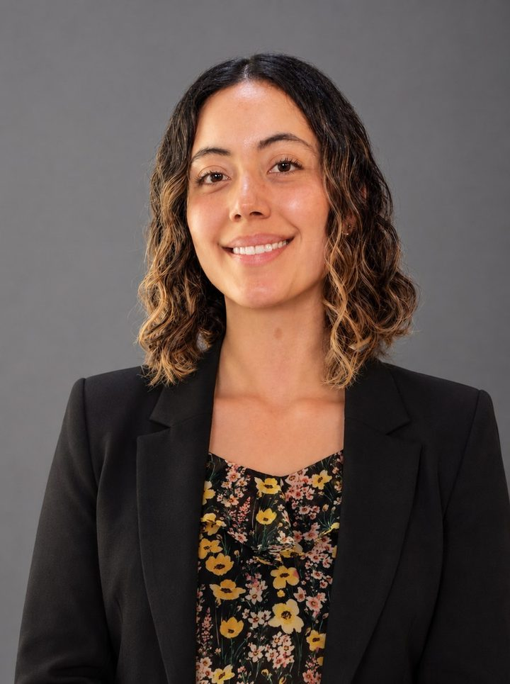

Dayana Caterín Rodríguez Briceño
Llevo ideas de innovación hasta su implementación.
Especialista en innovación en Compensar. Ingeniera Mecatrónica.
Master in Technology Innovation · Master in Business Administration

Sobre mí
Qué hago, en qué soy fuerte y qué busco.
Llevo casi cinco años en Compensar y hoy estoy a cargo del portafolio de iniciativas de IA de Financiamiento y Alianzas. Defino qué se prioriza, valido cada idea con los negocios y habilito a los equipos de ciencia de datos, tecnología y proveedores para que las soluciones se implementen.
Lidero un equipo de 5 personas y trabajo con riesgo, compras, proyectos y los negocios, respondiendo por los resultados desde la idea hasta la implementación. Aplico experimentación, validación con usuarios y metodologías como SIT, Design Thinking y Lean Startup.
Me interesa escalar la innovación y la adopción de IA en las organizaciones.
Resultados
Cada iniciativa de IA de Financiamiento y Alianzas, con su gráfica y su detalle. Pasa el cursor o haz clic para explorar.
Del piloto a la escala
Pasa el cursor o haz clic en una barra.
En 2026 gestioné un portafolio de 30 experimentos y pilotos de IA. Cada uno se prueba primero a pequeña escala para validar si genera valor antes de invertir más. De los 30, 9 escalaron y hoy operan.
Las 9 que escalaron
Auditoría de llamadas
Antes, dos personas auditaban las llamadas de monitoreo y fraude, y su capacidad era de unas 30 llamadas al día. Si llegaban 300, la cobertura era del 10%; si llegaban 500, bajaba al 6%. Mientras más llamadas, menos porcentaje auditado.
Mueve el deslizador para ver cómo cambia la cobertura manual. DIVA, un transcriptor con un agente en Copilot que evalúa la calidad de cada llamada, audita el 100% y redujo 80% el tiempo de auditoría.
Tiempo y errores que se eliminaron
Haz clic en una barra para ver qué se eliminó.
Reducción porcentual de tiempo y de errores frente al proceso anterior. Los errores eran sobre todo humanos: digitación, información mal documentada, incompleta o con una redacción que no se entendía.
Estados financieros para crédito
Los analistas de crédito transcribían a mano los estados financieros, con mucho tiempo y errores de digitación. Habilité con un proveedor una solución con OCR que extrae la información de los PDF y la estructura en Excel.
95% menos tiempo y 90% menos errores.
Analítica con menos carga
Índice: el tiempo del proceso anterior equivale a 100.
El equipo de analítica no tenía tiempo para documentar sus modelos ni para atender el volumen de solicitudes. Gestioné agentes de IA que generan la documentación y los diccionarios de datos.
90% menos tiempo en documentación y en diccionarios de datos.
Las solicitudes de datos también pasaron de 3 días a minutos.
Aceptación de los personajes con IA
Haz clic en la gráfica para repetir la animación.
Se hizo un focus group con el grupo financiero para validar el contenido educativo generado con IA: si les gustaba que el personaje fuera un personaje de IA.
29 de 30 participantes lo validaron: 96,6% de aceptación.
Dos canales, dos resultados
Haz clic en un sector. Para volver al resumen, haz clic en el centro.
Cultura de uso de IA
Pasa el cursor por una herramienta para ver sus conexiones.
Los 300 colaboradores de la unidad de Financiamiento y Alianzas empezaron a usar Copilot. Habilité las licencias y las herramientas, acompañé la adopción tecnológica con capacitaciones y talleres prácticos, y se logró que lo usaran en su trabajo.
Filtra por aplicación
Huellas Naranja
Pasa el cursor o haz clic en cada etapa.
Huellas Naranja es la comunidad de Compensar para familias con mascotas. Compensar cuenta con cerca de 1.000.000 de afiliados, y la comunidad nació para acercar la cultura animal a las familias.
Participé en el ciclo completo: ideación, validación con usuarios y escalamiento, hasta entregarla al equipo que hoy la opera.
En 2024 la dejé con 300 familias que ya accedían al beneficio y seguían creciendo.
Proyecto personal: selección asistida por IA
Haz clic en cada paso del proceso.
Una herramienta que ayuda a recursos humanos a preseleccionar candidatos para cargos técnicos. Es un proceso más humano: los perfiles técnicos son más precisos y las personas que participan no viven la incertidumbre de no saber cómo va su proceso. Lo lidero y planeo, y un equipo técnico lo desarrolla.
Qué ya funciona
Qué falta
Los porcentajes comparan el proceso antes y después de cada solución.
Experiencia
Tres cargos en Compensar y un camino previo en innovación.
Especialista en innovación
CompensarGestiono el portafolio de iniciativas de IA de Financiamiento y Alianzas: 30 experimentos y pilotos en 2026, 9 escalados.
Profesional en innovación y desarrollo digital senior
CompensarAscendida al iniciar el escalamiento de Huellas Naranja, que saqué adelante hasta entregarla al equipo que hoy la opera.
Profesional en innovación y desarrollo digital junior
CompensarParticipé en la ideación y validación de Huellas Naranja, la comunidad de Compensar para familias con mascotas.
Gestor de innovación
CVR Ingeniería del Conocimiento S.A.SDiseñé e implementé el proyecto de gestión de sistemas de información e innovación en cultivo de arándanos, de la conceptualización a la implementación.
Docencia
Universidad de los AndesProfesora de cátedra de modelado digital y asistente docente de la Maestría en Gestión de la Innovación Tecnológica.
Educación
- MBA (Master in Business Administration)Universidad de los Andes · en curso
- Magíster en Gestión de la Innovación TecnológicaUniversidad de los Andes · 2021
- Ingeniería MecatrónicaUniversidad Militar Nueva Granada · 2019
Formación complementaria
- Actualización en Coaching de innovaciónSIT Colombia · octubre 2026
- IA: usos corporativos de Copilot en Microsoft 365Universidad Externado de Colombia · febrero 2026
- IA generativa al interior de la compañíaINNOVA · octubre 2025
Habilidades
Agrupadas por tipo.